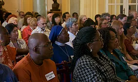
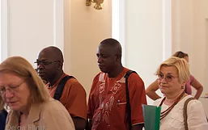
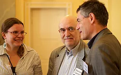
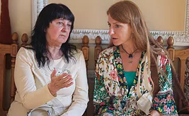
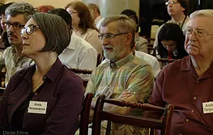

Congratulations on the successful XI ISUD World Congress hosted by the Polish Academy of Sciences, the University of Warsaw, and the Philosophy for Dialogue Foundation!
The 2016 XI ISUD World Congress was conducted as a celebration of the Society’s founding twenty-eight years ago in Warsaw. The Congress featured a geographically and culturally diverse group of scholars representing 39 countries from North and South America, Europe, Asia, Africa, and Pacific Island nations. Approximately 145 scholars attended and presented original research at the Congress. A spirit of good will and eagerness to engage in and cultivate inter-cultural philosophical dialogue pervaded the dynamics of the meeting.
CONGRESS PHOTO SHOTS





CONGRESS VIDEO CLIPS
Our deepest appreciation to the congress organizers, committee members whose hard work and contribution made the 2016 Congress such a successful and productive event!
CONGRESS ORGANIZERS
Małgorzata Czarnocka – Professor of Philosophy, Institute of Philosophy and Sociology of the Polish Academy of Sciences, Editor-in-Chief of Dialogue and Universalism, Poland.
Charles Brown – Distinguished Professor of Philosophy, Emporia State University, U.S.A.
HONORARY COMMITTEE
Kevin M. Brien – Professor of Philosophy, Washington College, Maryland, U.S.A.
Maria Pauline Eboh – Professor of Philosophy, Rivers State University at Port Harcourt, Nigeria.
Steven Hicks – Professor of Philosophy, Director of the School of Humanities and Social Sciences, the Behrend College of Pennsylvania State University, former ISUD President, U.S.A.
Victor J. Krebs – Professor of Philosophy, the Pontifical Catholic University of Peru, Peru.
Werner Krieglstein — Professor Emeritus of Philosophy and Religious Studies, The College of DuPage, U.S.A.
Janusz Kuczyński – Professor Emeritus of Philosophy, University of Warsaw, founder of ISUD and Honorary ISUD president, Dialogue and Universalism Honorary Editor-in-Chief, Poland.
Leszek Kuźnicki – Professor of Biology, member of the Polish Academy of Sciences, former President of the Polish Academy of Sciences, Chairman of the Dialogue and Universalism Council, Poland.
Michael Mitias – Professor of Philosophy, University of Michigan Dearborn in Dearborn, Michigan, former ISUD President, U.S.A.
Mogobe Ramose– Professor Extraordinarius in Philosophy, University of South Africa, South Africa.
Józef Niznik – Professor of Philosophy, Chairman of the Institute of Philosophy and Sociology of the Polish Academy of Sciences Council, member of Dialogue and Universalism Council, Poland.
Vladimir Przhilenskiy – Professor of Philosophy, Moscow Academy of Law, Russia.
John Rensenbrink – Professor of Philosophy, of Political Science, Co-founder of the Green Party of the United States, a founder of Maine Green Party, former ISUD President, U.S.A.
Andrzej Rychard – Professor of Sociology, Director of Institute of Philosophy and Sociology of the Polish Academy of Sciences, Poland.
Karol Henryk Toeplitz – Professor Emeritus of Philosophy, Christian Academy of Theology, member of Advisory Editorial Council of Dialogue and Universalism, Poland.
Lech Szczucki – Professor Emeritus of Philosophy, former Chairman of Institute of Philosophy and Sociology of the Polish Academy of Sciences Council, Laureate of the Foundation for Polish Science Award, Poland.
ORGANIZATIONAL–PROGRAM COMMITTEE
Małgorzata Czarnocka – Professor of Philosophy, Institute of Philosophy and Sociology of the Polish Academy of Sciences, Dialogue and Universalism Editor-in-Chief, Poland..
Stanisław Czerniak — Professor of Philosophy, Institute of Philosophy and Sociology of the Polish Academy of Sciences, President of the Philosophy for Dialogue Foundation, Poland.
Danilo Facca – Professor of Philosophy, Deputy Director of Institute of Philosophy and Sociology of the Polish Academy of Sciences, Poland.
Jean Campbell – Language Specialist, Shearman & Sterling LLP, member of the ISUD Board of Directors, U. S. A.
Leszek J. Krakowiak – Professor of Philosophy, High School of Wealth Education and Social Sciences, Deputy Editor of Dialogue and Universalism, Poland.
Adriana Neacsu — Professor of Philosophy, the University of Craiova, member of the ISUD Board of Directors, Romania.
Columbus Ogbujah — Philosopher, Lecturer, Institute of Foundation Studies, Rivers State University of Science & Technology at Port Harcourt, member of the ISUD Board of Directors, Nigeria.
Emilija Tajsina – Professor of Philosophy, State Power Engineering University in Kazan, member of the ISUD Board of Directors, Russia.
Halina Walentowicz – Professor of Philosophy, Institute of Philosophy, University of Warsaw, Poland.
Keqian Xu – Professor, Nanjing Normal University, Nanjing, China.